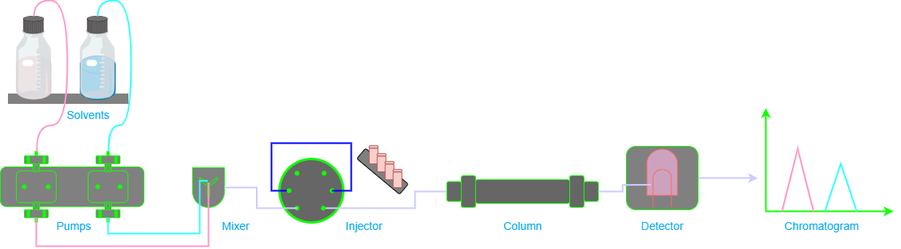

What is HPLC or High performance liquid chromatography?
Hey there, let’s talk about high-performance liquid chromatography, or HPLC for short. It’s a fancy way of saying that we use a machine to separate and analyze (identify, and quantify) different components of a mixture.
Why do we use HPLC? Well, it’s a really accurate and sensitive way to analyze mixtures. For example, it’s commonly used in the pharmaceutical industry to test the purity of drugs. It’s also used in environmental testing to detect pollutants in water and soil.
HPLC can be used to analyze a wide range of mixtures, from small molecules like drugs and amino acids, to large molecules like proteins and DNA. And the best part is that it’s relatively quick and easy to use once you get the hang of it.
Of course, like any scientific technique, there are some limitations and challenges to using HPLC. For example, it can be expensive to set up and maintain the equipment, and it requires a lot of expertise to interpret the results. But overall, HPLC is a really powerful tool that has revolutionized the way we analyze mixtures in the lab.
What is UHPLC or UPLC?
Ultra High Performance Liquid Chromatography (UHPLC), also known as Ultra Performance Liquid Chromatography (UPLC), is an advanced technique used in analytical chemistry to achieve better separation efficiency, improved resolution and shorter analysis times.. This innovative method uses HPLC columns with mean particle size diameters of less than two microns, combined with new commercially available instrumentation to achieve optimal linear velocities.
One of the key benefits of UHPLC is its ability to provide superior resolution. This is achieved by using columns with smaller particle sizes, which allows for more efficient separation of compounds. The increased resolution provided by UHPLC allows for the detection of trace amounts of compounds that would otherwise go unnoticed.
Another advantage of UHPLC is its ability to reduce analysis times. With traditional HPLC methods, analysis times can take hours or even days. UHPLC, on the other hand, can deliver results in a matter of minutes. This is particularly useful in industries such as pharmaceuticals, where time is of the essence.
The Science Behind HPLC: How Liquid Chromatography Works
How does HPLC work? Essentially, it involves pumping a liquid mixture through a column filled with tiny particles that have different properties, allowing them to interact differently with the mixture components. As the mixture passes through the column, the components separate and are detected by a detector at the end of the column.

The HPLC instrument typically consists of four major components: a pump, autosampler, column, and detector. The pump pushes the mobile phase (usually a solvent) through the system at a specified flow rate, while the autosampler injects the sample into the mobile phase. The sample travels with the mobile phase from the injection point to the head of the column, where the physical separation of the compounds occurs on the stationary phase. After elution from the column, the separated sample components travel to the detector, which generates an electrical signal based on specific properties of the analytes. The signal is then translated by a computerized data system into a chromatogram of analyte signal versus time.
The stationary phase in HPLC can be a solid material packed into the column or a liquid adsorbed onto a solid support. The choice of stationary phase and mobile phase is crucial for the separation and analysis of compounds, and the method can be adjusted to optimize the separation based on the specific requirements of the analysis.
Suitable Samples for HPLC
Here, we will discuss the suitable samples for (U)HPLC analysis.
(U)HPLC analysis has no volatility issues, meaning it can analyze samples that are not affected by changes in temperature. However, the analyte must be soluble in the mobile phase. The mobile phase is the liquid that flows through the column and carries the sample components. Therefore, the solubility of the sample in the mobile phase is crucial for successful analysis.
(U)HPLC can analyze samples over a wide polarity range and is capable of analyzing ionic samples. The mobile phase components are selected to ensure sample solubility. The polarity of the mobile phase can be adjusted to separate components based on their polarity. This makes HPLC a versatile technique for analyzing a wide range of samples.
(U)HPLC has no real upper molecular weight limit, meaning it can analyze large molecules such as proteins. Large proteins of many thousands of Daltons may be analyzed, making (U)HPLC a valuable tool in protein analysis. However, solubility in the mobile phase may preclude the analysis of very large molecules.
Application areas of (U)HPLC
As technology advances, the need for accurate and reliable analysis of various substances becomes increasingly important. One such method for analysis is High-Performance Liquid Chromatography (HPLC). But what types of samples are suitable for HPLC analysis?
Firstly, HPLC is commonly used in the pharmaceutical industry for drug analysis. This includes testing for impurities, degradation products, and determining the purity of the drug substance. Therefore, samples such as tablets, capsules, and injections can be analyzed using HPLC.
In addition to pharmaceuticals, HPLC is also used in the food industry. For example, HPLC can be used to analyze food additives, such as preservatives and colorants, as well as contaminants like pesticides and mycotoxins. Samples such as fruits, vegetables, grains, and meats can all be analyzed using HPLC.
Environmental testing is another area where HPLC is commonly used. HPLC can be used to analyze water samples for contaminants such as heavy metals, pesticides, and herbicides. Air samples can also be analyzed for pollutants such as volatile organic compounds (VOCs) and particulate matter.
Finally, HPLC can be used in forensic analysis. For example, HPLC can be used to analyze blood and urine samples for drugs of abuse or to determine the presence of alcohol. Additionally, HPLC can be used to analyze DNA samples for forensic purposes.
In conclusion, HPLC is a versatile analytical technique that can be used in a variety of industries and applications. Samples such as pharmaceuticals, food, water, air, and forensic samples can all be analyzed using HPLC. The ability to accurately and reliably analyze these samples is crucial for ensuring the safety and quality of various products and substances.
Common Parameters Used in (U)HPLC
Here are some common parameters used in HPLC:
- Mobile phase
-
The liquid that is pumped through the column to separate the sample components. It can be a single solvent or a mixture of solvents.
- Stationary phase
-
The solid particles that are packed into the column and interact with the sample components to separate them.
- Column dimensions
-
The length, diameter, and particle size of the column can affect the separation efficiency and speed.
- Flow rate
-
The rate at which the mobile phase is pumped through the column. It can affect the separation efficiency and resolution.
- Injection volume
-
The amount of sample injected onto the column. It can affect the sensitivity and peak shape.
- Detector type
-
The instrument used to detect the sample components as they elute from the column. Common detectors include UV-Vis, fluorescence, and mass spectrometry.
- Wavelength or mass range
-
The specific range of wavelengths or masses that the detector is set to detect.
- Gradient program
-
The specific pattern of changing mobile phase composition over time. It can affect the separation efficiency and resolution.
- Temperature
-
The temperature of the column and detector can affect the separation efficiency and selectivity.
- pH
-
The pH of the mobile phase can affect the separation efficiency and selectivity for certain types of samples.